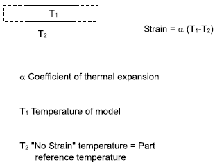
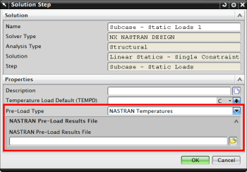

You can calculate thermal stresses and strains from a linear static analysis.
Thermal strains are induced when nodal temperatures differ from the reference temperature. You can assign temperatures directly to nodes or by specifying the temperature of geometry.
Mechanical loads can be included in an analysis where thermal strains exist to evaluate the combined effect of both loadings.

A thermal stress analysis can optionally use thermal results as pre-load input for a structural analysis.
To use the pre-load attributes for NX Nastran:
In the Simulation Navigator, right-click the subcase in the structural solution and choose Edit.
For Pre-Load Type, choose NASTRAN Temperatures.
Browse and select the NX Nastran *.op2 file, which contains the temperature results.
For results from NX Thermal, set the Pre-Load Type to NX THERMAL Temperatures.

When you specify a pre-load, the solver:
Reads the nodal temperature data from the selected output file.
Applies the temperatures to the nodes of the structure. The meshes must be identical for NX Nastran, but are not required for NX Thermal.
Uses the strain free temperature from the material data or the solution attributes for the Δt calculation.
Uses the structural material properties, together with any existing structural loads.